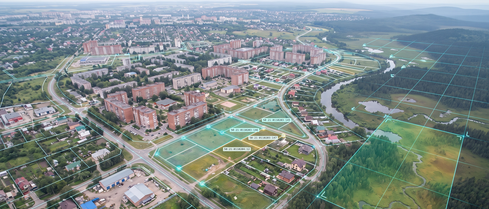
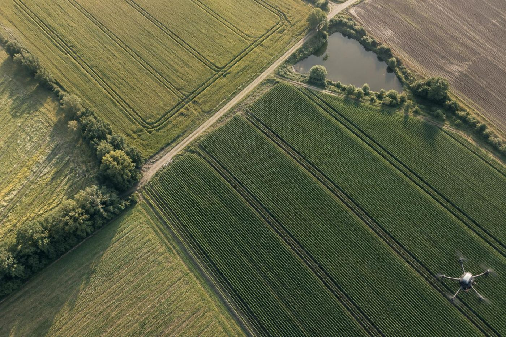

Главная / Кейсы
Кейсы
Где ИИ был нужен — и где мы его не поставили
Каждый кейс разобран по схеме: задача → вердикты по процессам → результат.
Все кейсы
Подтверждённые результаты

+13% рейсов по СМП и +14,5% скорости во льдах
Платформа безопасности плавания для нефтегазовых групп и национального морского перевозчика: ледовая обстановка, маршруты, границы автономии.
Разбор кейса → Международный
Международный>2 млрд. руб. экономии для судовладельцев и операторов · 2025–2029
Метео-бюллетени и контроль страхового покрытия для страховщиков; детекция аномалий флота для судовладельцев. Собственная разработка и внедрение сервиса в семи странах.
Разбор кейса →
−38% судо-суток на мониторинг акваторий
От сплошного визуального патрулирования к точечному мониторингу с БПЛА: ледовая обстановка и нефтяные загрязнения.
Разбор кейса →
+18% объёма работ филиалов при сокращении штата
Агент распределяет и приоритизирует работы филиалов в закрытом госконтуре; поверх него — стандарт управления.
Разбор кейса →
LLM в 3 подзадачах из 8 — и это правильно
Портфель инициатив девелопера топ-3 Москвы: где ИИ оправдан, а где достаточно обычных правил.
Разбор кейса →
37 систем, 60+ ведомств, ~1 млрд. руб. программы
Единое геоинформационное пространство Москвы: от разрозненных ведомственных данных к управляемой системе.
Разбор кейса →
От снимка БПЛА до кейса инспектора — за 2 часа
ML-детекция сорных и карантинных растений для государственного надзора: от снимка до готового кейса инспектора.
Разбор кейса →
+17,8 млн руб. за сезон ППБУ · окупаемость от ~13 ч
Заключение по процессам буровых установок: где ИИ оправдан, а где только детерминированная автоматизация.
Разбор кейса →
ИИ-микроскоп: согласие пациентов растёт на 30%
Программа внедрения ИИ в стоматологический микроскоп: три волны функций до ИИ-ассистента эндодонтиста.
Разбор кейса →Начнём с разговора
45 минут: ваш контекст и вопросы. На выходе — понимание, какой объём диагностики вам действительно нужен.